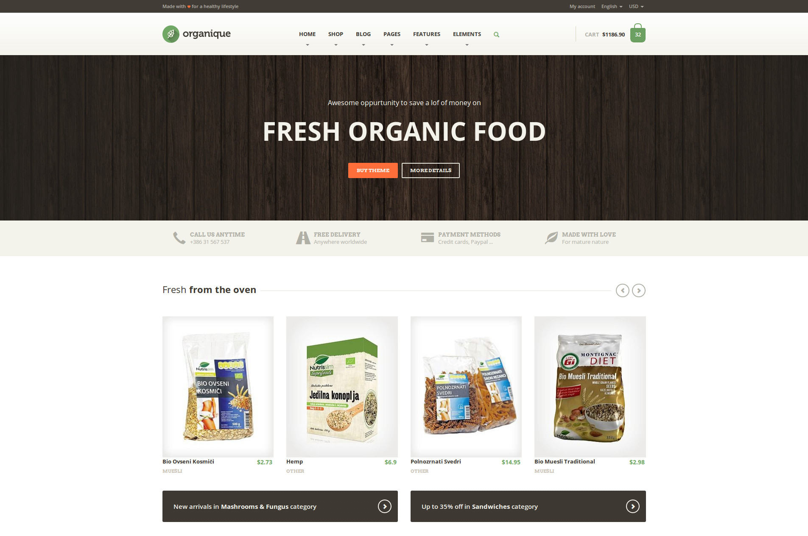

Thank you for purchasing the Organique HTML template crafted by ProteusThemes.
Below you will find the documentation how to use the template.
The Organique HTML template is build on top of SASS Twitter Boostrap HTML framework, using modern tools like Grunt, Bower and npm. All the components of the Bootstrap framework were left as they are during the development, so the template is upgrade-safe.
Find the documentation for Twitter Boostrap HERE.
You are allowed to use any component in your themes available in Twitter Bootstrap. However, for the performance reasons some of the components were commented out in the src/sass/bootstrap.scss
file. Uncomment the components you need in your project and recompile the project using $ grunt or $ grunt build when you cd to the root of the template in terminal.
Organique is build with the advanced tools for the frontend development. Grunt is a JavaScript task runner. The Gruntfile.js comes with the theme, so one can optimize all the files and code with little to no effort.
If you want to edit the HTML files directly, you can edit the build sources in the build directory or more lossy HTML files in the src directory. However, if you are familiar with the Grunt and Bower, you can just run the following commands in the terminal to start using the prepared Gruntfile:
$ cd <the-directory-of-organique>
$ npm install
$ bower install
That should install all the dependencies in the folders node_modules and src/bower_components. For the development work you can then just run:
$ grunt
It has live reload as well, just enable it in the Chrome Extensions. For building the sources to the highly-optimized code, run in terminal:
$ grunt build
That will export all the sources to the folder build which is then ready for production.
There are two custom fonts from Google Fonts used in the Organique HTML template:
There are two icons fonts used for maximum quality of the icons in the Organique:
You will find one PSD file in the folder
extras/PSDs. There are master layers for the individual page layouts.
The images available for template preview aren't included in the HTML template, because of the licenses, but you can buy them at photodune.net:
All the other images are from the Nutrisslim healthy food company and we use them in our demo/preview site with their permission.
In the blog pages you will find the Twitter Feed in the sidebar. This is in fact the embedded timeline from the Twitter. To get it for your page, go to the Twitter Widgets and create a new widget for your site, grab the HTML code and paste it in the template.
On the blog pages in the sidebar you may notice the Flickr Widget. Like the Twitter Feed, this is the Flickr service and the code can be generated on this page. With one exception - you should delete a part of the code to achieve the same effect as on our demo site. Follow these steps:
flickr_badge_uber_wrapperFor more information about the Flickr badge API see this link.
There are some advanced filters for filtering the products in the file shop.html. We use Isotope for this filtering.
Eveything about filtering functionality of the Isotope is explained here. In the shop filters we use the data-target attribute to select the products on the right. Class js--filter-selectable is added to all the links on the left which can be selected in the same group with OR condition. For detailed filtering (AND conditions) you should add the class js--filter-selectable detailed.
To really understand in depth what is going on I suggest reading through the code in js/IsotopeShop.js. There is also jQuery UI slider for additional filtering over the price. However, the price range filter can be changed with almost no effort at all. At the bottom of the file main.js you will find the code where the IsotopeShop is called. You can change the settings there.
Organique is using the Bootstrap's Affix menus. This is the menu you can find in the page elements.html. More about Affix and Scrollspy (for updating the current active menu element) can be found in the Bootstrap documentation.
You can easily turn on the sticky navbar by adding the class js--navbar to this element:
<header class="header js--navbar">
You can easily add the google maps by adding the div with the following classes and HTML5 attributes:
<div class="simple-map js--where-we-are" data-latlng="46.049467,14.460506" data-markers="[{lat: 46.049467,lng: 14.460506,title: 'ProteusThemes Ljubljana'},{lat: 46.020569,lng: 15.476118,title: 'ProteusThemes Senovo'}]"></div>.
The center of the map and markers for Google Maps can be set using HTML5 data-* attributes. More specifically these three attributes:
data-latlng - to set the center coordinates of the map, first latitude, then longitude, for example data-latlng="40.7056308,-73.9780035" for the New Yorkdata-markers - to set the one or more markers on the map, for example data-markers="[{lat: 40.710136,lng: -73.940538,title: 'Location One'},{lat: 40.683923,lng: -73.993095,title: 'Location Two'}]" for 2 location in the New Yorkdata-zoom - to set the the zoom level, integer from 0 to 20, for exampledata-zoom="12"The documentation for all the other Bootstrap's JavaScript components can be found here.
The working contact form has been added to the Organique template in version v1.3.0.
The form is written in PHP and can be found in ./contact.php. Be sure that your server supports PHP and has all the required settings for build-in mail() PHP function.
All you need to do to enable the PHP form is to point the user to the contact.php instead of contact.html and change the following variable in the ./php-form/send-email.php to your actual email address:
<?php /* set the email of the recipient (your email) */ $recipient = "your.email@example.com";
The message will be sent directly from your website to the email address you have specified above and will have the following form:
----- Info about the sender ----- Name: [name] Email: [email] ----- Message ----- [the actual message from the user which sent the email]
If you need advanced cusomizations on the theme, we are available for that as well.
Just let us know your needs to: info@proteusthemes.com
For your general orientation: the prices for modifications start at the 200 EUR + VAT.
Changelog of the theme is available on ThemeForest website.